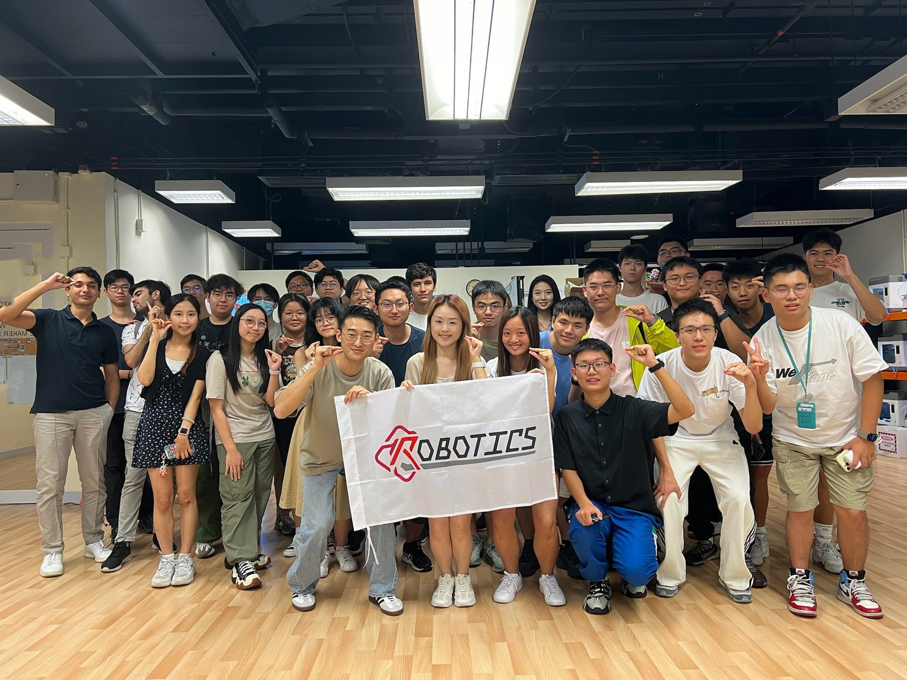

Club Lead
Strategy & CoordinationMaintains the club direction, partnerships, member experience, and yearly planning.
Team
This page is structured for the club to add real names, photos, and advisor information when ready. For now it presents the operating roles clearly.
Leadership
Replace these role cards with named members once the public roster is confirmed.
Maintains the club direction, partnerships, member experience, and yearly planning.
Coordinates technical tracks, project milestones, documentation, and system testing.
Supports recruitment, workshops, internal communication, logistics, and activity updates.
Technical Groups
Each group can publish projects, tutorials, meeting notes, and technical outcomes over time.
CAD, structure, parts, mounting, fabrication planning, and mechanical integration.
Embedded systems, sensors, actuators, power, wiring, and control loops.
Vision, SLAM, learning algorithms, sensor fusion, and data workflows.
Programming, simulation, autonomy logic, integration tooling, and testing.

Advisors & Partners
The team page can include faculty advisors, technical mentors, supporting labs, sponsors, and collaboration partners when those details are ready for public release.